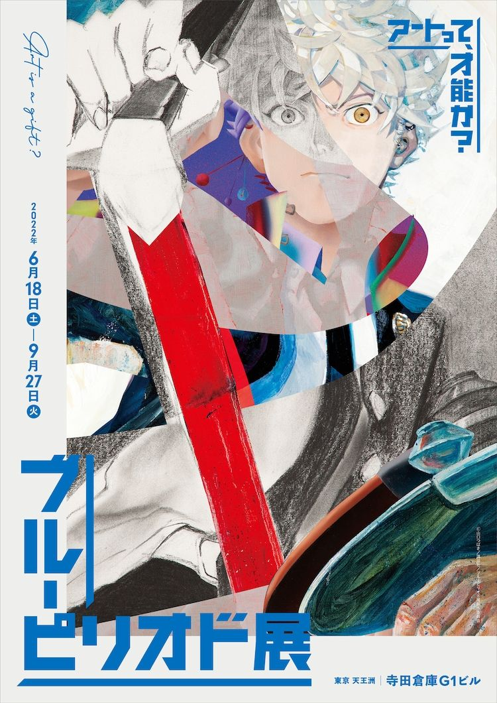

Blue Period
Thể loại: Học đường
Mô tả:
Blue Period là một bộ slice of life – học đường – nghệ thuật kể về hành trình một học sinh khám phá và theo đuổi hội họa một cách nghiêm túc. Tác phẩm tập trung vào đam mê, áp lực, thất bại và nỗi bất an khi biến nghệ thuật từ sở thích thành con đường sống. Đây là câu chuyện rất thực về việc tìm kiếm bản thân và trả lời câu hỏi: mình thực sự muốn sống vì điều gì?
Tóm tắt cốt truyện:
Yatora Yaguchi là một học sinh trung học có thành tích tốt nhưng sống khá vô định, không có mục tiêu rõ ràng. Một lần tình cờ tiếp xúc với hội họa, Yatora bị cuốn hút bởi khả năng thể hiện cảm xúc và thế giới nội tâm qua màu sắc. Từ đó, cậu quyết định theo đuổi con đường nghệ thuật và đặt mục tiêu thi vào trường mỹ thuật danh giá. Hành trình này không hề dễ dàng: Yatora phải đối mặt với sự cạnh tranh khốc liệt, giới hạn của bản thân, nỗi sợ thất bại và câu hỏi về giá trị của tài năng so với nỗ lực. Blue Period theo sát quá trình Yatora trưởng thành cả về kỹ năng lẫn tinh thần, học cách chấp nhận bản thân, sự không hoàn hảo và ý nghĩa thật sự của việc sáng tạo nghệ thuật.
Bình luận
Vui lòng đăng nhập để bình luận.